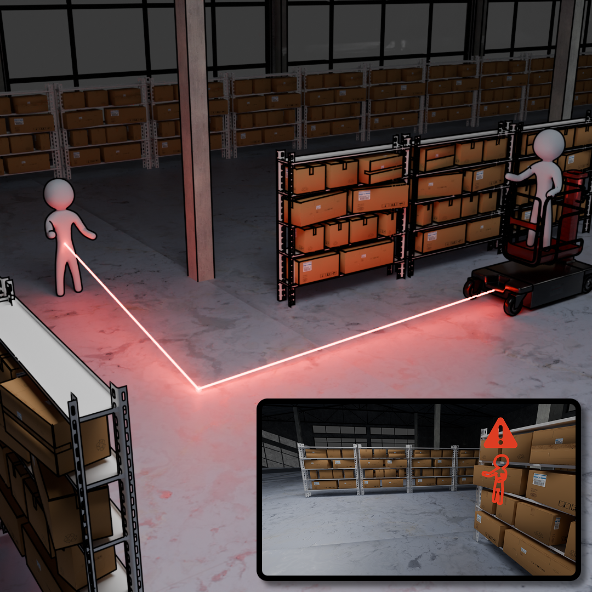
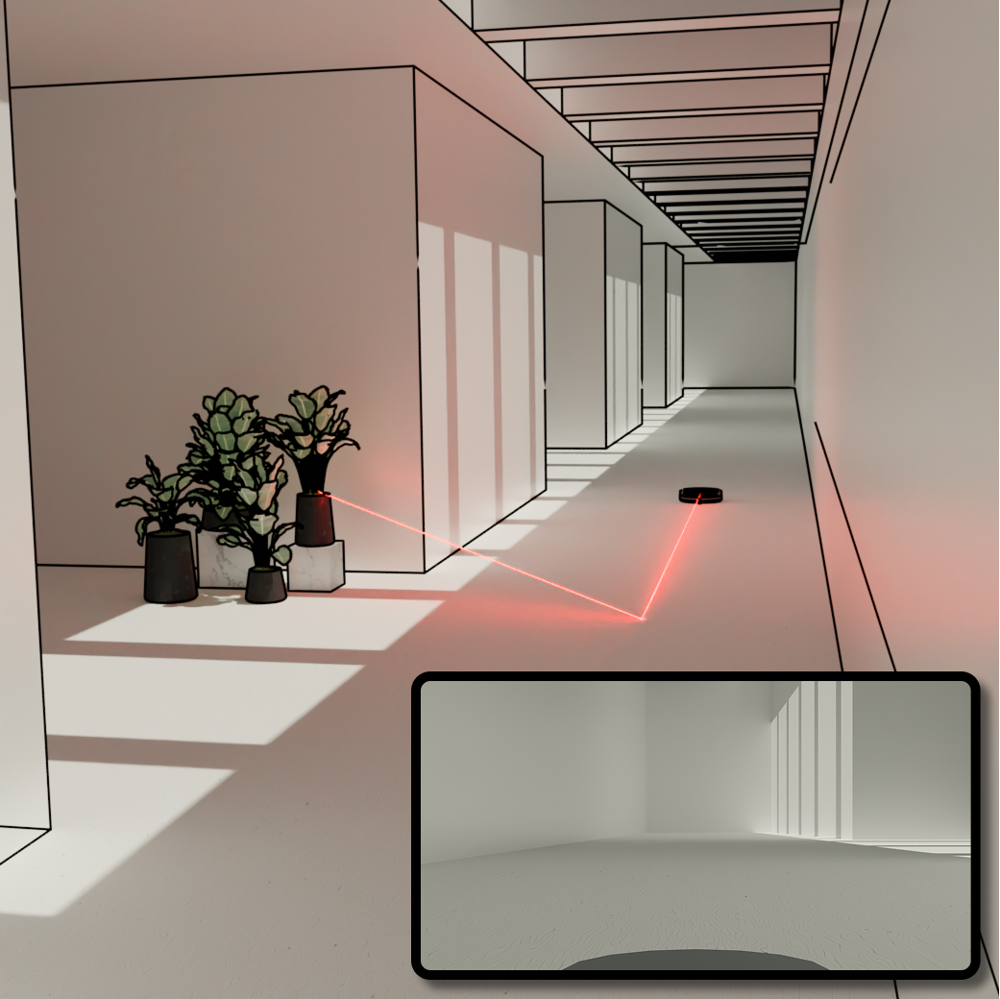
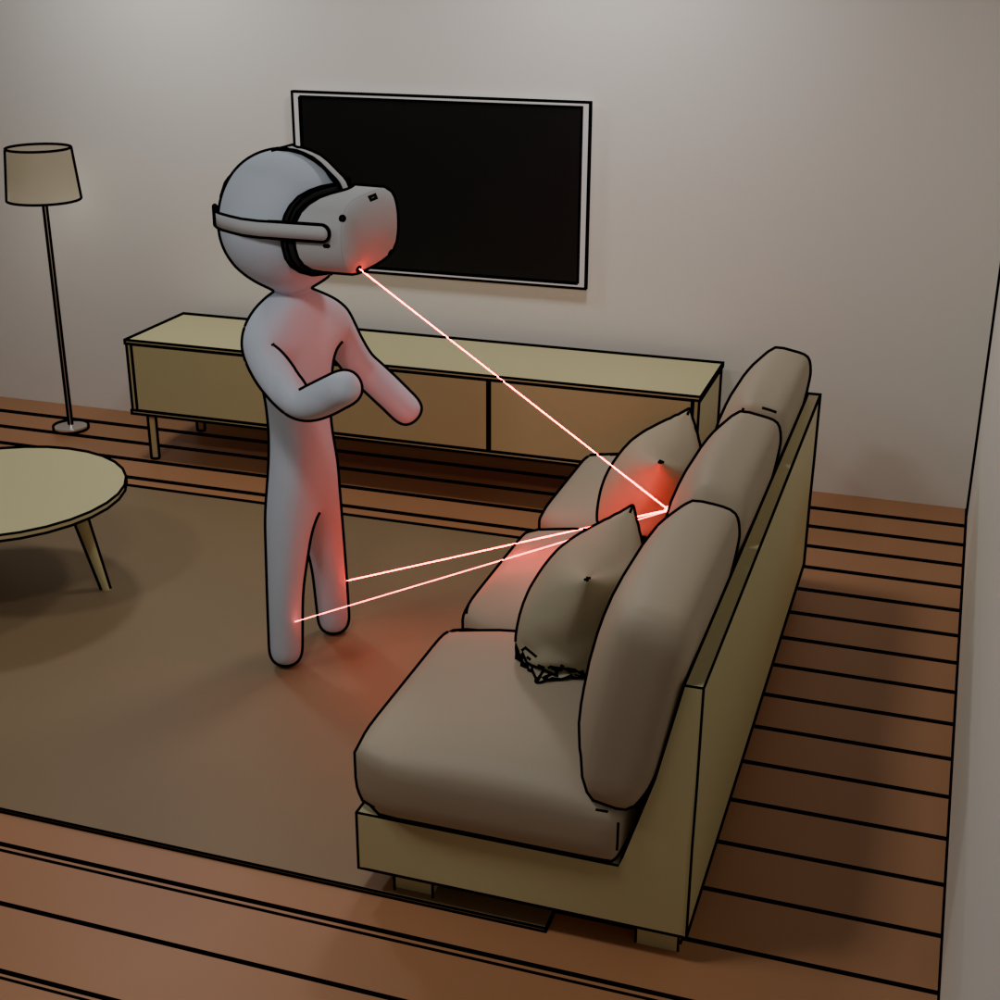

Nature 2026
We repurpose smartphone-grade consumer LiDAR for real-time, handheld, and practical non-line-of-sight imaging.
Abstract
LiDAR sensors are rapidly becoming ubiquitous in consumer technology, appearing in devices such as the Apple iPhone Pro, Apple Vision Pro, Waymo self-driving cars, home robots, and more. Once confined to specialized industrial systems, depth-sensing hardware is now embedded in everyday consumer platforms.
We show that these consumer LiDARs can do more than measure visible depth—they can also see hidden objects around corners. Using smartphone-grade hardware, we demonstrate non-line-of-sight (NLOS) 3D reconstruction, tracking, and camera localization.
This work transforms off-the-shelf consumer LiDAR into plug-and-play NLOS imaging systems. In doing so, this work brings NLOS imaging out of the lab and into the hands of everyday users. Democratizing this capability opens the door to a new generation of applications in robotics, mobile perception, AR, and beyond.
Consumer LiDAR sensors can achieve picosecond timing resolution. That is how much time it takes light to travel a few centimeters!
The LiDAR illuminates a wall and light bounces in all directions.
Some light directly returns to the sensor. The time it takes for the light to return encodes the depth to the wall. This is the standard use case for LiDARs
Some of the light will bounce around the corner, hit the hidden object, and return to the sensor. This light can be used to get the shape and position of the hidden object.
Tracking an object in real-time (30 Hz). Useful for detecting motion around blind corners and collision avoidance.
Consumer LiDAR unlocks a new class of non-line-of-sight sensing capabilities for safety, robotics, AR, and more without requiring specialized lab hardware.

Detect and track people or vehicles hidden around corners before they enter the field of view—critical for autonomous driving and robotics.

Use hidden scene geometry as passive landmarks to localize a moving camera in environments where GPS and visual odometry fail.

Recover the 3D shape of occluded objects for AR, search-and-rescue, and inspection. In AR, consumer LiDAR can enable the headset to see the user's leg.
@article{somasundaram2026consumer,
title = {Imaging Hidden Objects with Consumer LiDAR
via Motion Induced Sampling},
author = {Somasundaram, Siddharth and Young, Aaron
and Dave, Akshat and Pediredla, Adithya
and Raskar, Ramesh},
journal = {Nature},
year = {2026}
}